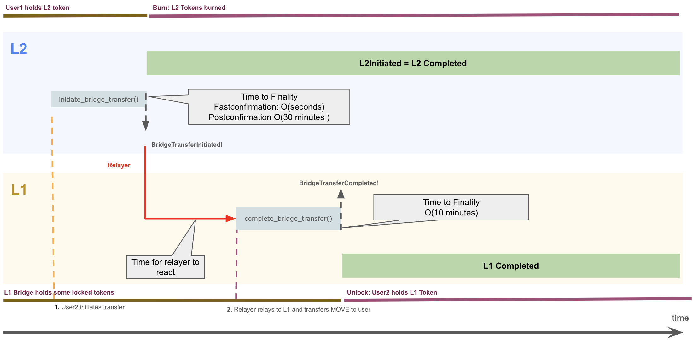

MIP-58: Lock/Mint-type Native Bridge with trusted Relayer
- Description: Proposes a lock/mint-type Native Bridge that capitalizes on the trust-assumption on the Relayer.
- Authors: Primata
- Desiderata: MD-21
Abstract
We propose a lock/mint-type Native Bridge. The lock/mint bridge design streamlines operations, enhances security, and improves user experience, making it easier to bridge assets between chains.
Motivation
Different types of bridges have been considered for the Native Bridge, see MIP-60. The initial design employed a HTLC-based bridge, which has been found to lead to bad UX requires four transactions and a complex design.
This proposal advocates for replacing the current HTLC-based bridge design, with a lock/mint-type bridge with a simpler and more efficient two-transaction mechanism. The proposed design reduces costs, enhances security, minimizes user friction, and avoids potential exploits caused by refund logic. It addresses long-standing issues such as reliance on sponsored transactions, outdated audits, and unimplemented fee mechanisms speeding the process to achieve a fully functional bridge that movement yet has been unable to complete, and lots of under issues raised and still pending.
Reminder: HTLC-based bridge
The HTLC-type Native Bridge design poses numerous challenges, including inefficiency, cost, and user frustration:
- Transaction Complexity
Requires four interactions:
- Two by the user (initiation and finalization).
- One by the Relayer to complete the transaction.
- One by a third party (tasked by the Relayer) to finalize refunds in case of failure.
- If any of these fails, users and the operator face losses.
- High Cost
- The multi-transaction setup is expensive for both users and the operator.
- Estimations in fee calculation that are too far off real values could result in significant losses.
- Example: At 16 gwei, bridging costs $20 for 10k transactions. If fees are miscalculated by 25%, this leads to a $25k loss. At 100 gwei, the loss escalates dramatically.
- Unfriendly User Experience
- The current design requires users to have funds on the target chain for finalization. This increases friction and discourages adoption.
- Sponsored transactions are essential to the current implementation but remain unimplemented, leaving users stranded without funds.
- Security Risks
- Relayer keys are a critical point of failure. This assumption cannot be avoided.
- Refund logic introduces vulnerabilities where attackers could exploit the rate limit and Relayer downtime.
- For instance, if the Relayer fails to finalize on the initiator, a malicious actor could:
- Take over the refund keys.
- Exploit both directions of the bridge (e.g., $L1MOVE→$L2MOVE and $L2MOVE→$L1MOVE) repeatedly, draining funds.
- Maintenance Burden
- The current audit is outdated and does not reflect the significant changes made since.
- The current design requires a complete UI/UX overhaul, adding complexity and delay.
- Unnecessary Complexity
- HTLC-based bridges are largely abandoned in favor of simpler, more effective designs.
- Examples like the Consensys HTLC bridge demonstrate the pitfalls of such approaches.
- Infrastructure Simplification
- Infrastructure is still incomplete for the current HTLC bridge design and we are struggling to find sound solutions that balance UI/UX and security. For example, this issue regarding UX vs number of confirmations to require on the Ethereum side, is still under debate.
- Because of the over-engineered design, infrastructure is prone to error and we might end up being damaged by the amount of infrastructure we have not built yet and has to be built for the Relayer to fully function.
- We could strip down the Relayer code and achieve a final design much more quickly.
The proposed lock/mint bridge design mitigates these issues, creating a safer, faster, and user-friendly bridge while maintaining operational reliability.
Specification
The lock/mint bridge design focuses on minimizing complexity and maximizing security. It also leverages the trust assumption on the Relayer to streamline operations and enhance user experience.
Components
The following components are involved
L1 Bridge contract The contract to which a user can request a bridge transfer L1→L2 and through which the Relayer completes transfers L2→L1.
L2 Bridge contract The contract to which a user can request a bridge transfer L2→L1 and through which the Relayer completes transfers L1→L2.
L1 token pool An address which collects $L1MOVE that are transferred L1→L2 and from which tokens are released when transferred L2→L1.
L2 Mint contract A contract capable of minting $L2MOVE.
(Trusted) Relayer An off-chain component that can read relevant events from either chain. It MAY operate nodes on both chains to learn about the completion of complete transfer transactions.
Protocol Description
The bridge is a simpler version of the current implementation, which relies on the assumption that the Relayer Keys are not to be compromised.
L1 -> L2
- User initiates a bridge transfer on L1. Contract stores a mapping of the user
bridgeTransferIdfor easy access. It transfers from the user $L1MOVE to the contract. The transaction emits originator, recipient, amount and anonce. - Relayer awaits for finalization of the transaction on L1.
- Relayer sends a complete transaction on L2 to complete the transfer.
- The completion transaction verifies that the transaction is truthful by comparing the provided bridgeTransferId hash and the emitted values of originator, recipient, amount and
nonce. Finally, it mints $L2MOVE and sends it to the recipient address. - User is notified on the frontend that their transaction has been completed.
- The time to finality for the complete transaction on the L2 should be considered after the postconfirmation, see MIP-37, to provide strong finality guarantees.
Reminder: Postconfirmation is an anchoring mechanism for the L2 to the L1. It provides additional reorg protection.
Note: We MAY consider Fastconfirmation instead of Postconfirmation, see MIP-65. This assumes the L2 is extremely unlikely to reorg AND the committee is considered to be safe.

L2 -> L1
- User initiates a bridge transfer on L2. Contract stores a mapping of the user
nonceto bridge details for easy access. User transfers $L2MOVE amount to the contract which burns it. The transaction emits originator, recipient, amount andnonce. - Relayer awaits for finalization of the transaction on L2. This should be considered after the postconfirmation, see MIP-37, to provide strong finality guarantees.
- Relayer completes the transfer on L1.
- Completion transaction verifies that the transaction is truthful by comparing the provided
bridgeTransferIdhash and the emitted values of initiator, recipient, amount andnonce. Finally, it transfers $L1MOVE to the recipient address from the locked token pool. - User is notified on the frontend that their transaction has been completed.
Note: Due to gas price fluctuation on L1 we SHOULD consider Fastconfirmation instead of Postconfirmation, see MIP-65. This assumes the L2 is extremely unlikely to reorg AND the committee is considered to be safe.

Key Features
We discuss the key features also in relation to the HTLC-based bridge to provide a comparison with the previous design.
-
Lock/Mint mechanism
- Initiation: User sends a transaction to initiate the bridge containing recipient and amount.
- Completion: A Relayer or multi-signature group completes the transfer on the counterparty contract with the originator, recipient, amount and
noncefor hash verification. - No Funds Requirement: User is not required to have funds on target chain and we do not have to build sponsored transactions.
- Delivery by Relayer: Because the Relayer delivers the funds, there is no requirement for the user to complete the transaction on target chain, therefore simplifying the user experience and allowing a smooth onboarding on the network for transfers from L1 to L2. User only has to await for the finalization on the source chain and for the Relayer to perform the completion on target chain. This is standard practice for every major bridge in the ecosystem.
- Less parameters: Because there is no exchange of secrets between the user and Relayer, we have a substantial reduction of logic.
- Only Completable: Previously we reserve a refunder role to revert transactions. In this approach this is different as we guarantee delivery of funds through the same party that would guarantee funds being refunded, because bridges can ONLY be completed.
-
Consolidation of Logic
- Merge lock and completion functionality on the counterparty contract. Once lock is called, funds are already in the control of the user. In the HTLC implementation, once the timelock is over and complete on initiator has not been called, both the initiator and counterparty funds are available to the user, opening up for an exploit.
- Removes the refund functionality entirely to eliminate associated exploits.
-
Parameter Validation
- Ensure parameter validation on the counterparty to prevent invalid transactions.
-
Relayer Redundancy
- Use two types of Relayers:
- Automated Relayer: Operated with minimal human involvement; its private key is highly secured.
- Multi-Signature Relayer: Managed by the team to guarantee transaction completion in case of failures.
- Use two types of Relayers:
-
Cost Efficiency
- Minimize gas costs by reducing the number of interactions and simplifying fee calculations.
-
Enhanced Security
- Avoid refund logic to close exploit windows.
- Protect against key compromise through key isolation or known by no parties and multi-signature Relayer setups.
- There is no scenario where a bridge could lead to double-spending. It’s either completed by Relayer or not.
- In the HTLC bridge the user can loose its bridge
preImagewhich could lead to them being unable to complete the bridge. By not relying on apreImagefrom the user, it minimizes issues. It is not a loss in security because the purpose of thepreImageis solely for refunding.
-
Batch Processing for Downtime
- Multi-signature Relayers can process multiple pending transactions in a single batch to compensate for downtime.
-
BridgeTransferId
- Continue using unique identifier to prevent double-spending and track transactions securely.
-
Initial Bridge Fee proposals
- On the L1 to L2 bridge, do not charge fees.
- On the L2 to L1 bridge, charge a fee estimated by admin. It’s set to the gas spent in ethereum in move. This requires an oracle and can only be implemented after oracles are live and we are able to have a maintainer that is able to set the fees on L2.
entry fun set_fee(caller: &signer, fee: u64) { assert_is_maintainer(caller); borrow_global<BridgeConfig>(@aptos_framework).fee = fee; } -
Best Practices
- Adopt currently used bridge designs from established designs like Arbitrum, LayerZero and Blast bridges, which use a Relayer to finalize the bridge.
- User is not required to have funds on counterparty contract to finalize the bridge.
Exploits and Potential Losses
- Key Compromise
- The compromise of the Relayer keys would lead to unauthorized transactions, putting the protocol at risk of unlimited value exploit. The protocol must absorb the losses and rotate Relayers. To minimize this risk MIP-74 proposes a rate limitation even for the Relayer.
- Fee wrong estimation
- Incorrect fee calculations (e.g., underestimating gas) can cause significant financial losses for the operator.
Reference Implementation
1. Two-Transaction Flow
- User initiates the transfer.
- Relayer or multisig completes the transfer with parameter validation.
- Current HasuraDB built internally can provide enough infrastructure for users to know if their transaction has been completed. It does not differ from the current (HTLC-based) design in any way since user is not able to see if their transaction is in-flight. We could introduce this by notifying the user if the Relayer has been ordered to complete the transaction.
- There would be two states for user to reference,
transfer_initiatedortransfer_completedand those are the only two possible states. Funds can only be returned by bridging back.
 Figure: Users would be able to see if the bridge has been completed. It’s either pending or completed.
Figure: Users would be able to see if the bridge has been completed. It’s either pending or completed.
2. Batch Completion
- Multisig Relayers could process pending transactions in batches during downtime of the standard Relayer, ensuring timely resolution.
3. Contract Simplification (compared to HTLC-based Native Bridge)
- Combine lock and completion functionality on the counterparty contract.
- Remove refund logic to streamline operations and improve security.
- Cheaper transactions because of reduction of logic.
- Consolidate Initiator and Counterparty into a single contract (this might be the most dangerous thing proposed but it has already been proposed for HTLC Native Bridge implementation).
4. Rate Limiting designs
Here we discuss three options for rate limiting. MIP-74 discusses option C.
TODO: Details such as this should be moved to the MIP of Rate Limitation, and different options should be listed as “Alternatives”.
A. Single-sided rate limiting (on source chain)
- Rate limiting should be implemented on the L1 and maps each day to a budget, for each direction. Once the budget is reached on one of the directions, no more tokens can be transferred on that direction.
- The bridge is financially secured by an Insurance Fund, see MIP-50, which determines the maximum amount of tokens to be transferred per day, called the budget. The insurance fund is maintained by Movement Labs.
- The budget is one quarter of the Insurance Fund balance. This is meant to account for the insurance fund to be able to insure all current funds already transferred and all tokens inflight, per direction.
- The Insurance Fund maintains the rate limit budget by adjusting its own
$MOVEbalance. It should be either the Movement Labs multisig or a new multisig 1/3 if we choose to adopt an approach that requires more direct ability by the personnel. - Once the rate limit budget is reached, if no issues have been observed, operators should simply wait for the next day.
- If an issue has been observed, an operator should simply transfer to the bridge contract the sum of the exploit size, being the result of additional supply on L1, outside of the bridge address, and the additional supply on L2. This action covers both cases where tokens were extracted from the bridge contract on L1 or over-minted on L2. Movement Foundation should evaluate the amount of tokens that should be held by the Insurance Fund after the incident and transfer to it the amount to reach that amount.
- This approach is open to exploits where the Relayer key is compromised. It would enable the exploiter to freely mint on L2.
B. Two-sided partial rate limiting (target chain only)
- Rate limiting should be implemented on both L1 and L2 for inbound transactions only. It maps a daily budget of inbound transactions and once it’s reached, the Relayer cannot complete more transactions. The bridge is financially secured by two Insurance Funds, one on each side, maintained by Movement Labs, and the maximum amount of tokens to be transferred per day, per direction is half of each of its Insurance Funds balances. This is meant to account for all tokens already transferred and inflight, per direction.
- The Insurance Funds determine the rate limit budgets. Thus the rate limit can be adjusted by changing the
$MOVEbalance. They should be either Movement Labs multisigs or new multisigs 1/3 if we choose to adopt an approach that requires more direct ability by the personnel. - Once the rate limit budget is reached, if no issues have been observed, operators should simply wait for the next day.
- If an issue has been observed, operators should transfer to the bridge address the exploit amount on the L1 and burn the exploit amount on the L2. Movement Foundation should evaluate the amount of tokens that should be held by the Insurance Funds and operators should receive those tokens and bridge tokens if an exploit occurred on L2.
- This approach is more susceptible to issues on the frontend because the frontend has to acknowledge rate limit budget and inflight tokens and inform users if the rate limit is about to be reached, not only if it has been reached.
C. Two sided full rate limiting
- The previous approaches may break the rate limit if users can directly initiate the bridge transfer via the bridge contracts. Since we MUST guarantee the completion of transfers the rate limit on the source chain could get exceeded, leading to ever increasing backlog of transfers.
- Therefore, rate limiting should be implemented on both L1 and L2 for inbound and outbound transactions.
- This approach extends the previous approach.
- It protects against exploits of the Relayer.
- Initiating transfers get rejected on the source chain, which improves safety and fulfills rate limit requirements on the source chain.
- On the source chain the rate limit is not related to the Insurance Fund. This opens the question who sets the rate limit on the source chain. We answer this in MIP-74.
5. Bridge Fee
TODO: Details such as this should be moved to the MIP of Bridge Fees, and different options should be listed as “Alternatives”.
- When bridging from L1 to L2, the protocol, through the Relayer, sponsors the gas cost on Movement. We do not need to make any modification on contracts or Relayer to support it.
- When bridging from L2 to L1, we have a few viable solutions but it’s preferable to highlight two.
- Relayer sets a fee on L2, a global variable that can be set at any given time. Considering that block validation time on L1 is bigger than on L2, it becomes a viable approach since L2 can rapidly adjust the fee according to the current block and always charge an above L1 gas cost fee to attempt that the bridge is net positive. $L2MOVE is deducted from the amount of tokens that are currently being bridged and transferred to a funds manager. This gives the protocol a very reliable way to estimate how much MOVE will be charged and feed to the user a precise amount of tokens. However, bridge transfers cannot always immediately be initiated on the L1, e.g. if there is a surge in transactions.
- Enable the Relayer to specify on the L1
completeBridgeTransfertransaction, the bridge fee per transaction. The amount is deducted from the total amount of tokens that were bridged and transferred to a funds manager. The dangerous situation is that we expect is this takes much more than 10 minutes before the transfer can occur, and this could lead to a big disparity between the expected amount of funds and the actual amount of tokens received.
Verification
-
Correctness
- Simulate multiple transaction scenarios to ensure robustness.
- Test edge cases, including Relayer downtime and batch processing.
-
Security Implications
- Conduct audits focused on the simplified design.
- Implement rate-limiting safeguards and validate parameters in contracts.
-
Performance Impacts
- Benchmark gas costs and transaction throughput.
-
Validation Procedures
- Perform an audit and thorough testing, alongside an open invite to the community to verify the bridge.
- Seek community feedback and incorporate suggestions.
Appendix
A1: Related Issues
A2: Gas Cost Comparison
- Current Design: ~400k gas per bridge round trip.
- Simplified Design: ~200k gas per bridge round trip.
A3: Referenced Designs
Copyright
Copyright and related rights waived via CC0.